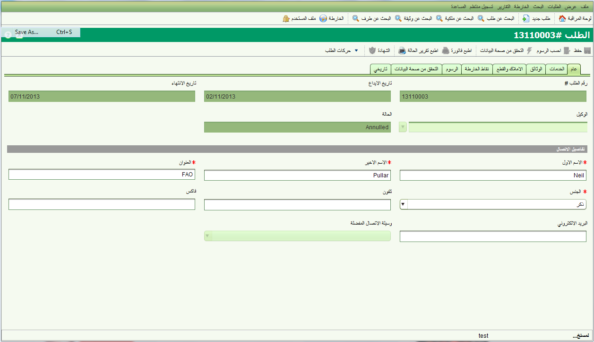

تفاصيل الطلب
تستطيع من خلال شاشة تفاصيل الطلب اضافة طلب جديد او تعديل بيانات طلب موجود. لاضافة طلب جديد, يمكن الوصول الى شاشة تفاصيل طلب من القائمة الرئيسية : الطلبات – طلب جديد > New Applications menu or selecting
.
لتعديل بيانات طلب, اختر الطلب من قائمة الطلبات المعينة او الغير المعينة في شاشة مراقبة النظام ثم اختر تحرير. اذا لم يكن الطلب موجودا في القائمة استخدم شاشة البحث عن الطلبات لايجاد الطلب . عند الضغط على زر تحرير سوف يتم فتح شاشة تفاصيل الطلب . قم بحفظ البيانات بعد تعديلها.

الطلب هو مجموعة من الخدمات التي تقدمها دائرة الاراضي استجابة لطلب من الزبون. كل خدمة قد تؤدي الى تغييرات على معلومات الملكية او الحقوق المرتبطة. التفاصيل التي يمكن تسجيلها في الطلب هي :
- الوكيل –الشخص او المؤسسة التي قدمت طلب معلومات او طلب تعديل بيانات تسجيل ارض او مساحة مسجلة في النظام . قد يكون الشخص محامي او مساح مرخص ينوب عن المالك , او المالك نفسه او طرف ثالث لديه اهتمام راسخ في ملكية معينة. تفاصيل الوكيل اختيارية.
- شخص الاتصال – وهو الشخص الذي ستتم مراجعته للحصول على توضيحات او معلومات اضافية . يجب تحديد شخص الاتصال لكل طلب وعادة يكون شخص الاتصال هو مقدم الطلب.
- الخدمات – تستخدم للتحكم في نوع التغيير المطلوب اجراؤه على تسجيل الملكيات او المساحة, تشكل الخدمات الحركات التي يمكن لدائرة الاراضي القيام بها على الطلب.لمزيد من المعلومات عن هذه الخدمات ارجع الى قسم الخدمات في النظام. يجب على الاقل تاضافة خدمة واحدة على الاقل لكل طلب
- الملكية – الملكيات التي تاثرت بالطلب . تفاصيل الملكية اختيارية في الطلب الجديد ولكنها قد تكون اجبارية قبل البدء باجراءات الخدمة وذلك حسب نوع الخدمة..
- الوثائق – هي الوثائق القانونية او الوثائق الاخرى التي تشرح او تبرر اسباب التغيير على بيانات ملكية او مساحة. الوثائق الممسوحة ضوئيا يجب ارفاقها مع الطلب لتسهيل الرجوع البها عند الحاجة. تفاصيل الوثيقة اختيارية ولكن هناك بعض انواع الوثائق يجب ان تكون مرفقة مع بعض الخدمات. الوثائق المطلوبة لكل نوع خدمة يتم عرضها في قائمة وثائق الطلب حسب نوع الخدمة
- الرسوم – هي الرسوم التي يجب دفعها الى دائرة الأراضي قبل معالجة الطلب.تعتمد الرسوم على البيانات التي تم إدخالها للطلب والخدمات المرافقة. سوف يتم احتساب الرسوم تلقائيا عند إيداع الطلب. لاحتساب الرسوم قبل ايداع الطلب استخدم اداة احتساب الرسوم من شاشة تفاصيل الطلب. يمكنك كذلك طباعة سند قبض باستخدام اداة طباعة وصل . لا يمكن تعيين طلب في سولا قبل دفع الرسوم.عندما يتم دفع الرسوم فعليا من قبل مقدم الطلب , اعكس ذلك في حقل "مدفوع" بتعليمه باشارة اكس . كذلك يمكنك في نفس الوقت ادخال القيمة المدفوعة او رقم الوصل . لاحظ بان حقل مدفوع لا يفعل الا للمستخدم الذي لديه صلاحيات مناسبة
- نقاط الخارطة – تسمح هذه الخاصية لمستعرض الخرائط في سولا مع ادوات وصف مكان الطلب بتحديد تقريبي لموقع الطلب. ان تسجيل هذه المعلومة قد يساعد في تحديد مواقع طلبات اخرى قريبة على مكان الطلب الجديد قد يكون لها تائير على الطلب الجديد او بالعكس.
- التحقق – يتم فيها عرض قواعد الاعمال التي يجب ان تتحقق عند الضغط على خيار "تحقق" في شاشة الطلب بشكل يدوي . التحقق يتم فقط بعد ايداع الطلب.
- الحركات التاريخية – تعرض جميع الحركات التي تمت على الطلب والخدمات المرافقة له. وتتبع هذه الحركات دورة حياة الطلب او الخدمة كما هو موضح في قسم دورة حياة الطلب والخدمة. الحركات التاريخية متاحة فقط بعد ايداع الطلب
انظر ايضا